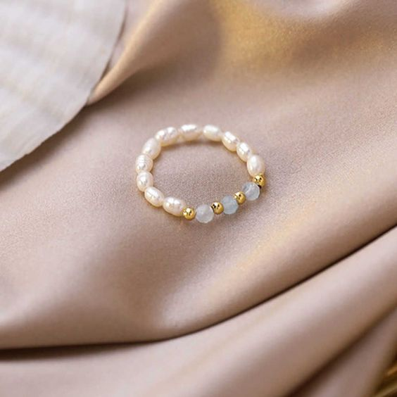

Diseña tus propios anillos sencillos con abalorios
Crear tus propios accesorios puede ser una experiencia divertida. Un anillo con abalorios es un proyecto perfecto para empezar en este mundo de la bisutería. Con solo unos pocos materiales y un poco de tiempo, puedes diseñar un anillo único que refleje tu estilo y creatividad. Sigue estos sencillos pasos y descubre cómo transformar abalorios coloridos en una hermosa pieza de bisutería.

Materiales necesarios:
- Abalorios
- Hilo elástico
- Tijeras
Paso 1: Preparar el Material
Corta aproximadamente 60 cm de hilo transparente. Esto te dará suficiente material para trabajar cómodamente.

Paso 2: Ensartar los Abalorios
Elige tus abalorios favoritos y ensártalos en el hilo elástico. La cantidad de abalorios dependerá del tamaño de tu dedo y del tamaño de los abalorios, pero generalmente entre 12 y 15 abalorios es una buena cantidad.
Paso 3: Hacer el nudo
Una vez que tengas la cantidad deseada de abalorios ensartados, une los extremos del hilo para formar un círculo y haz un nudo firme para que los abalorios no se deslicen y la pieza quede perfecta.
Paso 4: Terminar el Anillo
Haz varios nudos adicionales sobre el nudo inicial para asegurar la fijación. Luego, corta el exceso de hilo con las tijeras.
